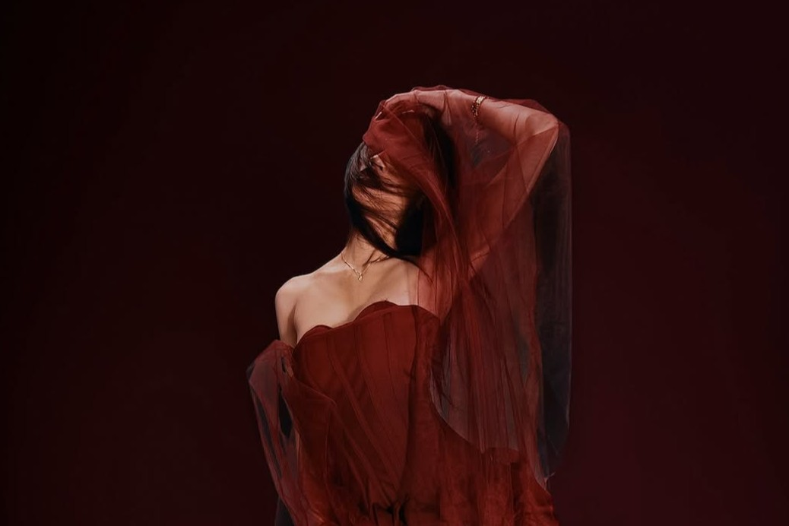
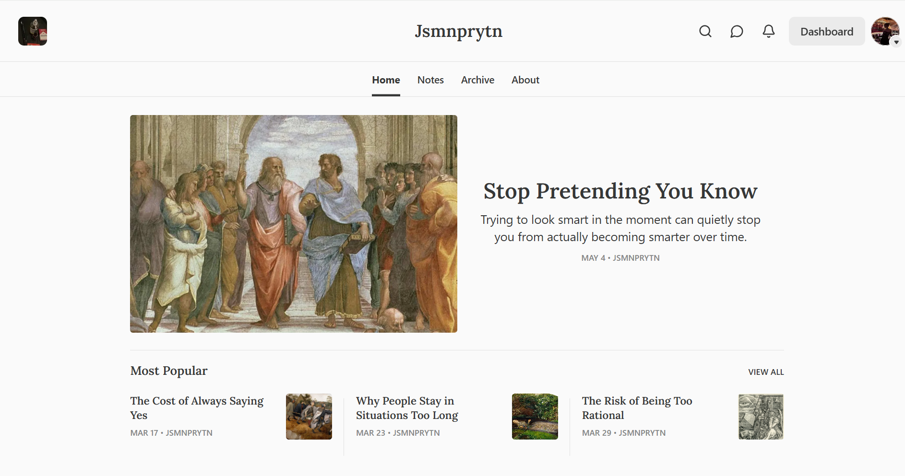
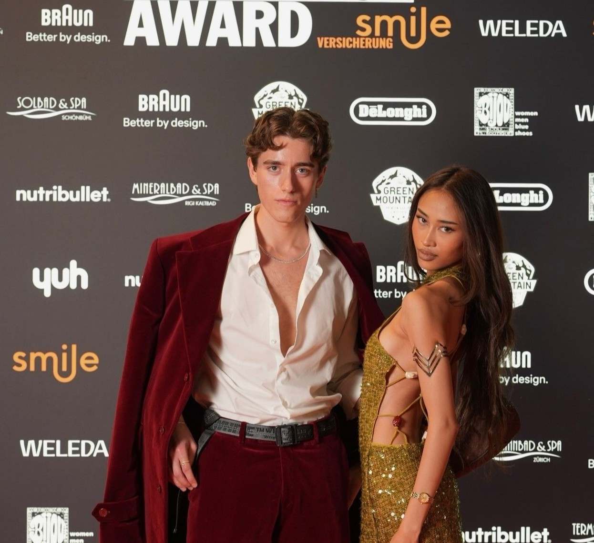
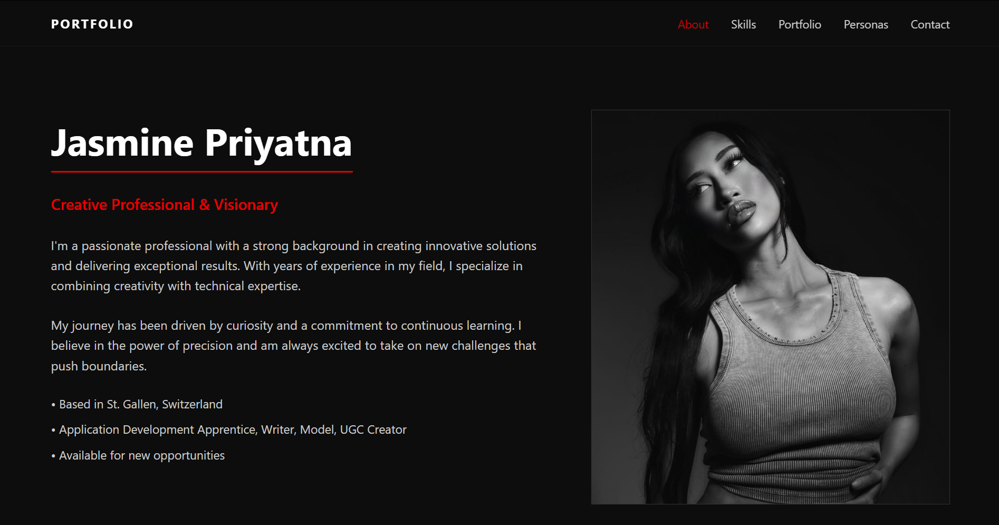
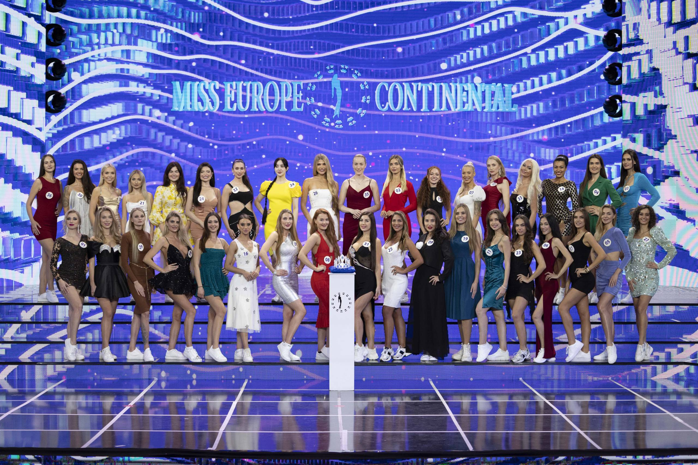
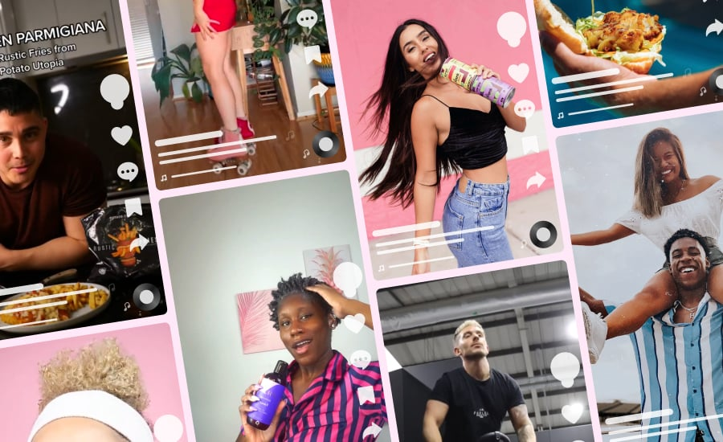

Visual work across editorial and lifestyle formats.

Exploring perception, behavior, and decisions.

Participation in a national creator platform.
Work combining arts and fashion.

Structured platform showcasing context, development, and visual work.

Selected participation in an international platform.

Short-form content focused on engagement and influence.